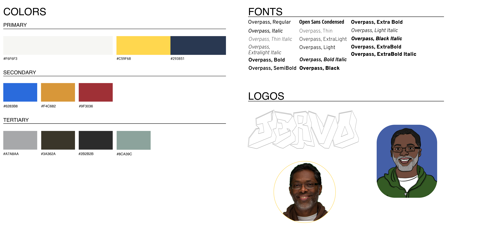

In November of last year, my professor, Jervo, assigned a project to create our own portfolio websites. I decided to give his website a visit for inspiration. In doing so, I found his website to be rather confusing and lacking on the design front. .
This was perfect timing, another professor in my interaction design class had just assigned us to redesign a website of our choosing. We were given 8 weeks to redesign 4 pages. After surveying my peers, I found that most of them were in agreement: Jervo.org needed a redesign.
Project Info
My Role
Tools used

What I saw: A website that was slightly outdated and difficult to digest along with general lack of a welcoming aesthetic. The website is boxy and text heavy.
The Problems:
Redesign Goals:
A primary focus is on Blue and Yellow to represent Drexel colors (I made them a little different from the exact colors so it wasn't so on the nose) with earthier orange and green accents to preserve the personality in the original website. I chose Overpass, regular, and all of its additional weights and styles for most of the text for its playful but accessible traits. I also redesigned the header logo to be bolder and more confident while keeping the street/graffiti feel.
This project was my first time doing everything, from my first time in Figma to my first time writing a case study. I am proud of what I accomplished in that little amount of time, especially considering I came in with no knowledge of anything. More than anything, this project has excited me to create more and improved portfolio projects down the road as I develop my craft and begin to personalize my style.